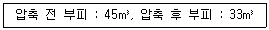
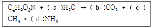
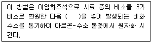
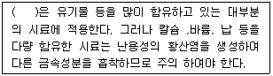
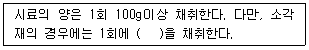
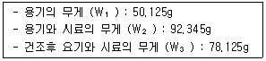
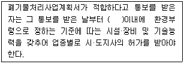

폐기물처리산업기사 (2011-03-20 기출문제)
1과목: 폐기물개론
1. 다음 중 채취한 쓰레기 시료의 분석절차 순서로 가장 적합한 것은?
- 시료 →밀도측정→물리적조정→건조→분류→화학적 조성분석
- 시료 →밀도측정→건조→분류→물리적조정→화학적 조성분석
- 시료 →전처리→건조→물리적조정→밀도측정→화학적 조성분석
- 시료 →전처리→건조→밀도측정→물리적조정→화학적 조성분석
(정답률: 100%)

2. 쓰레기 발생량 조사방법 중 물질수지법에 관한 설명으로 옳지 않은 것은?
- 시스템에 유입되는 대표적 물질을 설정하여 발생량을 추산하여야 한다.
- 주로 산업폐기물의 발생량 추산에 이용된다.
- 물질수지를 세울 수 있는 상세한 데이터가 있는 경우에 가능하다.
- 우선적으로 조사하고자 하는 계의 경계를 정확하게 설정하여야 한다.
(정답률: 75%)
3. 적환장의 일반적인 설치조건과 가장 거리가 먼 것은?
- 작은 용량의 수집차량을 사용 할 때
- 고밀도 거주지역의 존재 할 때
- 불법투기와 다량의 어질러진 쓰레기들이 발생 할 때
- 슬러지 수송이나 공기수송 방식을 사용 할 때
(정답률: 89%)
4. 폐기물의 부피감소를 위하여 압축을 실시하였다.다음 폐기물의 부피 감소율은?

- 136%
- 73.3%
- 36.4%
- 26.7%
(정답률: 77%)
5. 쓰레기발생량 예측방법과 가장 거리가 먼 것은?
- 경향법
- 계수분석모델
- 다중회귀모델
- 동적모사모델
(정답률: 74%)
6. 쓰레기 선별방법 중 Trommel스크린 선별효율에 영향을 주는 인자에 관한 설명으로 옳지 않은 것은?
- 스크린에 폐기물을 주입하기 이전에 분쇄기를 두는 것이 효과적이다,
- 회전속도는 어느 정도까지는 증가할수록 선별효율이 증가하나 그 이상이 되면 막힘 현상이 일어난다.
- 경사도가 크면 효율도 떨어지고 부하율도 커진다.
- 경험적으로[임계회전속도 × 0.65 = 최적회전속도]로 나타낼 수 있다.
(정답률: 95%)
7. 80%의 함수율을 가진 폐기물을 탈수시켜 40%로 감량시킨다면 폐기물은 초기 무게에서 몇% 정도가 감량되는가?
- 약 43%
- 약 58%
- 약 67%
- 약 74%
(정답률: 71%)
8. 약간 경사진 판에 진동을 줄 때 무거운 것이 빨리 판이 경사면 위로 올라가는 원리를 이용한 선별법은?
- Secators
- Floatation
- Stoners
- Inertial separation
(정답률: 87%)
9. 소각로에서 발생되는 재의 무게 감량비가 60%, 부피 감소비가 90%라 할 때 소각 전 폐기물의 밀도가 0.35t/m3이라면, 소각재의 밀도는?
- 0.95t/m3
- 1.⑤t/m3
- 1.25t/m3
- 1.40t/m3
(정답률: 65%)
10. 폐기물발생량이 1kg/인·일 인 지역의 인구가 10만이고, 적재량 8톤 트럭으로 이 폐기물을 모두 운반하고 있다면 1일 필요한 차량 수는?
- 9
- 11
- 13
- 15
(정답률: 95%)
11. CH3OH 이 혐기성 반응으로 완정히 분해되었다. 발생한 CH4의 양이 1.4L 였다면 투입한 CH3OH의 양(g)은?
- 1.32
- 2.67
- 3.82
- 4.56
(정답률: 67%)
12. 청소상태를 평가하는 평가법 중 서비스를 받는 시민들의 만족도를 설문조사하여 나타내어지는 사용자 만족도 지수는?
- CEI
- USI
- PPI
- CPI
(정답률: 100%)
13. 적환 및 적환장에 관한 설명으로 옳지 않은 것은?
- 적환장은 수송차량의 적재용량에 따라 직접적환, 간접적환, 복합적환으로 구분된다.
- 적환장은 소형수거를 대형 수송으로 연결해 주는 곳이며 효율적인 수송을 위하여 보조적인 역할을 수행한다.
- 적환장의 설치장소는 수거하고자 하는 개별적 고형폐기물 발생지역의 하중중심에 되도록 가까운 곳이어야 한다.
- 적환을 시행하는 이유는 종말처리장이 대형화 하여 폐기물의 운반거리가 연장 되었기 때문이다.
(정답률: 75%)
14. 어느 도시의 1년간 쓰레기 수거량은 2,000,000ton 이었고, 수거대상 인구는 2,000,000인 이었으며, 수거인부는 3,500명 이었다. 단위 톤당의 쓰레기 수거에 소요되는 맨 아워(man-hour)는 얼마인가? (단, 수거인부의 작업시간은 하루8시간이고, 1년 작업일수는 365일 이다.)
- 2.6 man-hour/ton
- 3.4 man-hour/ton
- 4.2 man-hour/ton
- 5.1 man-hour/ton
(정답률: 75%)
15. 어느 도시 인구가 500,000명이고 수거인부는 400인/일 이며, 총 분뇨량은 500t/day 이다. 이 때 분뇨수거량이 200t/day 이라면 분뇨수거율은?
- 20%
- 30%
- 40%
- 50%
(정답률: 54%)
16. 전단 파쇄기에 관한 설명과 가정 거리가 먼 것은?
- 충격파쇄방식에 비하여 파쇄속도가 느리다.
- 충격파쇄방식에 비하여 이물질의 혼입에 대하여 취약하다.
- 충격파쇄방식에 비하여 파쇄물의 입도가 고르지 못한 단점이 있다.
- 목재류, 플라스틱류, 종이류를 고장칼, 왕복 또는 회전칼과의 결합에 의하여 폐기물을 전단한다.
(정답률: 88%)
17. 전과정 평가(LCA)의 4 부분 중[조사분석과장에서 확정된 자원요구 및 환경부하에 대한 영향을 평가하는 기술적, 정량적, 정상적 과정]에 해당하는 것은?
- Improvement analysis
- Initiation analysis
- Inventory analysis
- Impact analysis
(정답률: 86%)
18. 약 800Kg의 쓰레기를 전처리(분쇄)한 후, 원추사분법에 의하여 25kg의 분석용 시료를 재취하고자 한다면 원추사분 조작을 몇 회 실시하여야 하는가?
- 3회
- 4회
- 5회
- 6회
(정답률: 57%)
19. 수거노선을 설정할 때 유의 사항과 가장 거리가 먼 것은?
- U자형 회전을 피하여 수거한다.
- 아주많은 양의 쓰레기가 발생되는 발생원은 가능한 한 같은날 왕복 내에서 수거한다.
- 수거지점과 수거빈도를 정하는데 있어서 기존정책이나 규정을 참고한다.
- 수거인원 및 차량형식이 같은 기존 시스템의 조건들을 서로 관련시킨다.
(정답률: 84%)
20. 밀도가 150kg/m3 인 쓰레기 10톤을 압축비(CR)가 3이 되도록 압축하였다면 최종 부피는?
- 22.2 m3
- 24.2 m3
- 26.7 m3
- 28.7 m3
(정답률: 58%)
2과목: 폐기물처리기술
21. 슬러지 60m3의 함수율이 95%이다. 건조후 슬러지의 체적을 1/10로 하면 슬러지 함수율은? (단, 모든 슬러지의 비중은 1임)
- 15%
- 25%
- 45%
- 50%
(정답률: 62%)
22. 폐기물 매립지 표면적이 50,000m2이며 침출수량은 년간 강우량의 15%라면 1년간 침출수에 의한 BOD 누출량은? (단, 년간 평균 강우량은 1,200mm, 침출수 BOD 5,000mg/L이다.)
- 35000kg
- 45000kg
- 55,000kg
- 65000kg
(정답률: 65%)
23. 유동층 소각로에 관한 설명으로 옳지 않은 것은?
- 연소효율이 높아 2차 연소실이 불필요하다.
- 유동매체의 축열량이 높아 단기간 정지 후 가동시에 보조연료 사용없이 정상가동이 가능하다.
- 상(床)으로부터 찌꺼기의 분리가 어렵다.
- 기계적 구동장치가 많아 고장율이 높다.
(정답률: 77%)
24. 퇴비화의 장·단점으로 옳지 않은 것은?
- 운영시에 소요되는 에너지가 낮다.
- 생산된 퇴비는 비료가치가 높다.
- 퇴비가 완성되어도 부피가 크게 감소되지는 않는다.
- 다양한 재료를 이용하므로 퇴비품질의 표준화는 어렵다.
(정답률: 90%)
25. 대표적인 고화처리방법인 석회기초법에 관한 설명으로 옳지 않은 것은?
- 가격이 매우 싸고 널리 이용되고 있다.
- 석회-포졸란 화학반응이 간단하고 용이하다.
- PH가 낮을 때 폐기물 성분의 용출가능성이 증가 한다.
- 탈수가 필요하다.
(정답률: 89%)
26. 매립된 지 5년이 넘지 않은 매립지에서 발생되는 침출수를 처리하기 위한 공정으로 가장 효율성이 양호한 것은? (단 , 침출수 특성 : COD/TOC ＞ 2.8, BOD/COD ＞ 0.5, COD ＞ 10,000ppm)
- 역삼투
- 화학적 산화
- 약품처리
- 생물학적처리
(정답률: 62%)
27. 배연 탈황시 발생된 슬러지 처리(FGD)에 많이 사용되는 고화 처리 방법은?
- 석회 기초법
- 열가소성 플라스틱법
- 표면 캡슐화법
- 자가 시멘트법
(정답률: 89%)
28. 탄질비가 각각 200과 20인 톱밥과 하수슬러지를 1 : 1로 혼합하여 퇴비화 할 때 나타나는 현상과 가장 거리가 먼 것은?
- 질소 부족 현상
- 퇴비화반응 지체
- 유기산으로 PH 저하
- 암모니아로 인한 악취 발생
(정답률: 79%)
29. 1일 쓰레기 발생량이 50ton인 도시의 쓰레기를 깊이 3m 의 도랑식으로 매립하는데, 발생하는 쓰레기의 밀도는 500kg/m3, 도랑 점유율은 70%, 매립에 따른 부피감소율은 30%일 경우, 1년간 필요한 매립지 면적은 몇 m2 인가? (단, 기타조건은 고려하지 않음)
- 약 12200
- 약 14400
- 약 16600
- 약18800
(정답률: 50%)
30. 고형분 20%의 주방찌꺼기 6톤이 있다. 소각을 위하여 함수율 40%되게 건조 시켰다면 이 때의 무게는? (단, 비중은 1.0 기준)
- 2.0톤
- 2.5톤
- 3.0톤
- 4.0톤
(정답률: 82%)
31. C6H6 5Sm3가 완정 연소하는데 소요되는 이론공기량(Sm3)은?
- 약 60
- 약 80
- 약 120
- 약 180
(정답률: 65%)
32. C4H9O3N 으로 표현되는 유기물 1몰이 혐기성 상태에서 다음과 같이 분해 될 때 메탄의 양은?

- 0.5몰
- 1.0몰
- 1.5몰
- 2.0몰
(정답률: 67%)
33. 어느 분뇨처리장에서 8Kℓ/일의 분뇨를 처리하며 여기에서 발생하는 가스의 양은 투입 분뇨량의 8배라고 한다면 이 중 CH4 가스에 의해 생성되는 열량은? (단, 발생가스 중 CH4가스가 75%를 차지하며, 열량은 4,000Kcal/m3-CH4이다.)"
- 32,000 Kcal/일
- 94,000 Kcal/일
- 192,000 Kcal/일
- 256,000 Kcal/일
(정답률: 74%)
34. 저위발열량이 7,000Kcal/Sm3의 가스연료의 이론연소온도는 몇 °C 인가? (단, 이론연소가량은 20 Sm3/Sm3, 연료연소가스의 평군 정압비열 0.35Kcal/Sm3.°C, 기준온도는 15°C ,공기는 예열하지 얺으며, 연소가스는 해리되지 않음)
- 1015
- 1515
- 2015
- 2515
(정답률: 58%)
35. 매립시 적용되는 연직차수막과 표면차수막에 관한 설명으로 옳지 않은 것은?
- 연직차수막은 지중에 수평방향의 차수증 존재시 사용된다.
- 연직차수막은 지하수 집배수시설이 불필요하다.
- 연직차수막은 지하매설로써 차수성이 확인이 어려우나 표면차수막은 시공시 확인이 가능하다.
- 연직차수막은 단위면적당 공사비는 싸지만 총공사비는 비싸다.
(정답률: 87%)
36. 건식법에 의한 소각로 유해가스(SO2) 대책 중 하나인 석회흡수법의 장점으로 옳지 않은 것은?
- 석회석 값이 저렴하여 운영비의 부담의 적다,
- 배기가스의 온도가 떨어지지 않는다.
- 소규모 및 노후 보일러에도 사용되어 질 수 있다.
- SO2가 석회석 분말표면에 침투가 용이하여 제거효가가 높다.
(정답률: 40%)
37. 호기성소화방법에 의하여 100Kℓ/d 의 분뇨를 처리할 경우 처리장에 필요한 송풍량은? (단, BOD 20,000ppm, 제거율 60%, 제거 BOD당 필요풍량 100m3/ BOD Kg, 분뇨비중 1.0)
- 5000m3/hr
- 15000m3/hr
- 25000m3/hr
- 35000m3/hr
(정답률: 45%)
38. 다이옥신 저감방안에 관한 설명으로 옳지 않은 것은?
- 소각로를 가동개시 할 깨 온도를 빨리 승온시킨다.
- 연소실의 형상을 클링커의 축적이 생기지 않는 구조로 한다.
- 배출가스 중 산소와 일산화탄소를 측정하여 연소상태를 제어한다.
- 소각 후 연소실 온도는 300°C를 유지하여 2차 발생을 억제한다.
(정답률: 75%)
39. 밀도가 1.0t/m3인 지정폐기물 100m3을 시멘트고화처리 방법에 의해 고화처리하여 매립하고자 한다, 고화제인 시멘트량을 규정에 의하여 혼합하였다면 고화제의 혼합율은? (단, 규정 : 고화제 투입량은 폐기물 1m3당 150kg)
- 0.13
- 0.15
- 0.18
- 0.21
(정답률: 79%)
40. 메탄(CH4)의 고위발열량이 9530Kcal/Sm3 이라면 저위발열량은?
- 8140 Kcal/Sm3
- 8340 Kcal/Sm3
- 8570 Kcal/Sm3
- 8740 Kcal/Sm3
(정답률: 42%)
3과목: 폐기물 공정시험 기준(방법)
41. 용출시험시 요출조작방법으로 옳지 않은 것은?
- 상온, 상압에서 진탕기의 진탕회수는 매분당 약200회 정도로 한다.
- 진폭이 4~5cm 인 진탕기를 사용하여 6시간 연속 진탕한다.
- 진탕이 끝나면 1.0㎛의 유리섬유여과지로 여과하여 시료용액으로 한다.
- 여과가 어려운 경우는 원심분리기로 매분당 2000회전 이상, 30분 이상 원심분리하여 상징액을 시료용액으로 한다.
(정답률: 77%)
42. 자외선/가시선 분광법(흡광광도법)에서 6가 크롬을 적자색으로 발색시키는 시약은?
- 다이페닐카바자이드
- 클로라민T
- 디티존
- 다이에틸다이티오카르바민산나트륨
(정답률: 43%)
43. 다음 중 취급 또는 저장하는 동안에 이물질이 들어가거나 또는 내용물이 손실되지 아니하도록 보호하는 용기로 정의되는 것은?
- 기밀용기
- 밀폐용기
- 밀봉용기
- 차광용기
(정답률: 74%)
44. 폐기물의 생성 또는 처리되는 공정이 적정하게 관리되지 않는 대상 폐기물의 양이 50톤이 있는 경우 채취하여야 하는 시료의 최소수는?
- 14
- 20
- 30
- 36
(정답률: 65%)
45. 십억분율(Parts Per Billion)을 올바르게 표시한 것은?
- Ng/kg
- Mg/kg
- ㎍/L
- PPm
(정답률: 82%)
46. 다음은 비소의 원자흡수분광광도법(원자흡광광도법)측정원리이다. ( )안에 알맞은 것은?

- 염화제이철
- 아연
- 중크롬산칼륨
- 염화제이수은
(정답률: 47%)
47. 시안을 자외선/가시선 분광법(흡광광도법)으로 정량할 때 황화합물을 제거하기 위해 넣는 시약은?
- 과산화수소수용액
- 아스코르빈산용액
- 아세트산아연용액
- 아비산나트륨용액
(정답률: 59%)
48. 온도에 관한 설명으로 옳지 않은 것은?
- 각각의 시험은 따로 규정이 없는 한 상온에서 조작한다,
- 냉수는 0~4°C 로 한다.
- 찬 곳은 따로 규정이 없는 한 0~15°C의 곳을 뜻한다.
- 온수는 60~70°C로 한다.
(정답률: 83%)
49. K2CR2O7을 사용하여 크롬 표준원액(100mg Cr/L ) 100mL를 제조할 때 K2CR2O7은 얼마나 취해야 하는가? (단, 원자량 k=39, Cr=52, O=16)
- 14.1 mg
- 28.3 mg
- 35.4 mg
- 56.5 mg
(정답률: 53%)
50. Pb(NO3)2를 사용하여 0.5mg/mL 의 납표준원액( 1000mg/L) 1000mL를 제조하려고 한다. Pb(NO3)2를 얼마나 취해야 하는가? (단, Pb의 원자량 : 207.2)
- 약 200mg
- 약 400mg
- 약 600mg
- 약 800mg
(정답률: 42%)
51. 다음은 유기물 분해 방법이다. ( )안에 가장 적합한 것은?

- 불화수소산 - 황산 분해법
- 질산 - 염산 분해법
- 질산 - 황산 분해법
- 염산 - 황산바륨 분해법
(정답률: 75%)
52. 크롬의 원자흡수분광광도법(원자흡광광도법)에 관한 설명으로 옳지 않은 것은?
- 공기-아세틸렌 불꽃에서 철, 니켈 등의 공존물질에 의한 방해영향이 크므로 황산나트륨 1% 정도를 넣어서 측정한다.
- 정량한계는 357.9㎚에서 0.0⑤mg/L 이다.
- 염이 많은 시료를 분석하면 버너 헤드 부분에 고제가 생성되어 불꽃이 자주 꺼지고 버너 헤드를 청소해야 한다.
- 시료중에 칼륨, 나트륨, 리튬, 세슘과 같이 쉽게 이온화 되는 원소가 1,000mg/L 이상의 농도로 존재할 때에는 금속측정을 간섭한다.
(정답률: 65%)
53. 다음은 시료 채취량에 관한 내용이다. ( )안에 옳은 내용은?

- 200g이상
- 300g이상
- 400g이상
- 500g이상
(정답률: 75%)
54. 무게를 '정확히 단다.' 라 함은 규정된 수치의 무게를 몇 mg 까지 다는것을 말하는가?
- 0.001mg
- 0.01mg
- 0.1mg
- 1.0mg
(정답률: 58%)
55. 다음 중 용어의 정의로 옳지 않은 것은?
- "액상폐기물" 이라 함은 고형물의 함량이 15%미만인 것을 말한다.
- 시험조작 중 "즉시" 란 30초 이내에 표시된 조작을 하는 것을 뜻한다.
- "비함침성 고상폐기물"이라 함은 금속판 구리선등 기름을 흡수하지 않는 평면 또는 비평면형태의 변압기 내부부재를 말한다.
- "정확히 취하여" 라 하는 것은 규정한 양의 액체를 홀피펫으로 눈금까지 취하는 것을 말한다.
(정답률: 60%)
56. 다음 중 휘발성 저급염소화 탄화수소류를 기체크로마토 그래피법으로 측정할 깨 사용하는 검출기로 가장 적합한 것은?
- ECD
- FID
- NPD
- FPD
(정답률: 42%)
57. 이온전극법을 이용한 시안측정에 관한 설명으로 옳지 않은 것은?
- PH 12~13의 알칼리성에서 시안 이온전극과 비교전극을 사용하여 전위를 측정한다.
- 시안화합물을 측정할 때 방해물질들은 증류하여도 잘 제거되지 않으므로 회화 후 추출하여 간섭성분을 제거 한다.
- 다량의 지방성분을 함유한 시료는 아세트산 또는 수산화나트륨용애으로 PH 6~7로 조절한 후 시료의 약 2%에 해당하는 부피의 노말 헥산 또는 클로로폼을 넣어 추출하여 유기층은 버리고 수층을분리하여 사용한다.
- 시료의 미리 세척한 유리 또는 폴리에틸렌용기에 채취한다.
(정답률: 36%)
58. PH미터는 한 종류의 PH 표준용액에 대하여 검출부를 정제수로 잘 씻은 다음 5회 되풀이 측정한 그 재현성이 얼마이내 이어야 하는가?
- ±0.3 이내
- ±0.2 이내
- ±0.1 이내
- ±0.⑤ 이내
(정답률: 83%)
59. 구리의 원자흡수분광광도법(원자흡광광도법)에 관한 설명으로 옳지 않은 것은?
- 측정파장은 324.7㎚이다.
- 구리중공음극램프를 사용한다.
- 조연성가스로 공기를 사용한다.
- 광전광도계를 사용한다.
(정답률: 54%)
60. 폐기물시료의 수분측정 시험결과 다음과 같은 (자료)를 얻었을 때 수분함량은?

- 33.7%
- 38.3%
- 42.6%
- 47.3%
(정답률: 73%)
4과목: 폐기물 관계 법규
61. 폐기물의 중간 처리시설인 기계적처리시설 기준으로 옳지 않은 것은?
- 멸균·분쇄시설(동력20마력 이상인 시설로 한정한다.)
- 압축시설(동력 10마력 이상인 시설로 한정한다.)
- 증발·농축 시설
- 연료화 시설
(정답률: 47%)
62. 지정폐기물의 종류 중 유해물질함유 폐기물(환경부령으로 정하는 물질을 함유한 것으로 한정한다.)의 포함범위등에 관한 설명으로 옳은 것은?
- 광재 : 철광원석의 사용으로 인한 고로 슬래그를 포함한다.
- 폐흡착제 및 폐흡수제 : 광물유·동물유 및 식물유의 정제에 사용된 폐토사를 포함한다.
- 분진 : 소각시설에서 발생되는 것으로 한정하며 대기오영 방지시설에서 포집된 것은 제외한다.
- 폐내화물 및 재벌구이 전에 유약을 바른 도자기 조각은 제외한다.
(정답률: 54%)
63. 폐기물처리시설 중 매립시설의 기술관리인의 자격기준에 해당되지 않는 자는?
- 화공기사
- 토목기사
- 전기기사
- 건설기계기사
(정답률: 58%)
64. 지정폐기물의 분류번호에서 폴리클로리네이티드비페닐함유 폐기물은 4가지로 분류 된다. 이에 해당되지 않는 것은?
- 폴리클로리네이티드비페닐 함유 폐유기용제
- 폴리클로리네이티드비페닐 함유 액상이 아닌 것
- 폴리클로리네이티드비페닐 함유 폐유
- 폴리클로리네이티드비페닐 함유 폐폐인트 및 폐락카
(정답률: 39%)
65. 폐기물관리법에 따른 에너지 회수기준으로 옳은 것은?
- 다른 물질과 혼합하지 아니하고 해당 폐기물의 저위발열량이 킬로그램당 3천 킬로칼로리 이상일 것
- 다른 물질과 혼합하지 아니하고 해당 폐기물의 저위발열량이 킬로그램당 3천5백 킬로칼로리 이상일 것
- 다른 물질과 혼합하지 아니하고 해당 폐기물의 저위발열량이 킬로그램당 4천 킬로칼로리 이상일 것
- 다른 물질과 혼합하지 아니하고 해당 폐기물의 저위발열량이 킬로그램당 4천 5백 킬로칼로리 이상일 것
(정답률: 72%)
66. 폐기물관리법이 적용되지 않는 물질에 대한 설명으로 옳지 않은 것은?
- 용기에 들어 있지 아니한 기체상태의 물질
- 하수 및 분뇨관리 촉진법에 따른 가축분뇨
- 원자력법에 따른 방사성 물질과 이로 인하여 오염된 물질
- 수질 및 수생태계 보전에 관한 법률에 따른 수질오염 방지시설에 유입되거나 공공수역으로 배출되는 폐수
(정답률: 70%)
67. 폐기물관리법에 사용하는 용어의 뜻으로 옳지 않은 것은?(오류 신고가 접수된 문제입니다. 반드시 정답과 해설을 확인하시기 바랍니다.)
- 처리 : 폐기물의 소각, 중화, 파쇄, 고형화 등의 중간처리(재활용 포함)와 매립하거나 해역으로 배출하는 등의 최종처리를 말한다.
- 폐기물처리시설 : 폐기물의 중간처리시설과 최종처리시설로서 대통령령으로 정하는 시설을 말한다.
- 폐기물의 감량화 시설 : 생산 공정에서 발생되는 폐기물의 양을 줄이고, 사업장내 재활용을 통하여 폐기물 배출을 최소화하는 시설로서 대통령령으로 정하는 시설을 말한다.
- 지정폐기물 : 인체, 재산, 주변환경에 악영향을 줄 수 있는 해로운 물질을 함유한 폐기물로 대통령령으로 정하는 폐기물을 말한다.
(정답률: 39%)
68. 폐기물처리시설 중 고온용융시설의 관리기준으로 옳은 것은?
- 고온용융시설에서 배출되는 잔재물의 강열감량은 1퍼센트 이하가 되도록 용융하여야 한다.
- 고온용융시설에서 배출되는 잔재물의 강열감량은 3퍼센트 이하가 되도록 용융하여야 한다.
- 고온용융시설에서 배출되는 잔재물의 강열감량은 5퍼센트 이하가 되도록 용융하여야 한다.
- 고온용융시설에서 배출되는 잔재물의 강열감량은 7퍼센트 이하가 되도록 용융하여야 한다.
(정답률: 50%)
69. 폐기물의 수출입 신고 내용 중 환경부령으로 정하는 중요한 사항을 변경하려면 변경신고를 하여야 한다. 환경부령으로 정하는 중요한 사항과 가장 거리가 먼 것은?
- 수출국 또는 수입국
- 폐기물의 운반방법, 운반시기, 경유장소
- 수출 또는 수입하는 폐기물의 종류 ,물리적 성상 또는 화학적 성분
- 수출 또눈 수입하는 폐기물의 양 (지정폐기물은 100분의 30이상, 지정폐기물 외의 폐기물은 100분의 50이상 증가하는 경우에만 해당 된다.)
(정답률: 58%)
70. 다음은 폐기물처리업(수집, 운반 또는 처리) 허가에 관한 내용이다. ( )안에 들어걸 내용으로 옳은 것은? (단, 지정폐기물은 제외하며, 연장은 고려하지 않음)

- 1년 (폐기물 수집,운반업은 6개월, 폐기물처리업 중 소각시설과 매립시설의 설치가 필요한 경우에는 2년)
- 1년 (폐기물 수집,운반업은 3개월, 폐기물처리업 중 소각시설과 매립시설의 설치가 필요한 경우에는 1년)
- 2년 (폐기물 수집,운반업은 6개월, 폐기물처리업 중 소각시설과 매립시설의 설치가 필요한 경우에는 3년)
- 2년 (폐기물 수집,운반업은 3개월, 폐기물처리업 중 소각시설과 매립시설의 설치가 필요한 경우에는 2년)
(정답률: 36%)
71. 환경부장관이나 시.도지사가 폐기물처리업자에게 영업의 정지를 명령하고자 할 때 천재지변이나 그 밖의 부득이한 사유로 해당 영업을 계속하도록 할 필요가 있다고 인정되는 경우, 영업정지에 갈음하여 부과할 수 있는 과징금의 최대 액수는?
- 1억
- 2억
- 3억
- 5억
(정답률: 80%)
72. 환경부령으로 정하는 폐기물처리시설의 설치를 마친자는 환경부령으로 정하는 검사기관으로부터 검사를 받아야 한다. 다음 중 음식물류 폐기물 처리시설의 검사기관으로 옳은 것은? (단, 그 밖에 환경부장관이 정하여 고시하는 기관 제외)
- 한국기계연구원
- 한국산업기술시험원
- 한국농어촌공사
- 수도권매립지관리공사
(정답률: 69%)
73. 지정폐기물(의료 폐기물은 제외)의 보관창고에 보관 중인 지정폐기물의 종류, 보관가능용량, 취급시 주의사항 및 관리책임자 등을 적은 후 설치하는 표지판 표지의 색깔로 옳은 것은?
- 녹색 바탕에 빨간색 선 및 빨간색 글자
- 녹색 바탕에 노란색 선 및 노란색 글자
- 노란색 바탕에 검은색 선 및 검은색 글자
- 노란색 바탕에 청색 선 및 청색 글자
(정답률: 65%)
74. 의료폐기물의 수집,운번 차량의 차체는 어떤 색으로 색찰하여야 하는가?
- 청색
- 흰색
- 황색
- 녹색
(정답률: 65%)
75. 의료폐기물의 종류 중 위해폐기물의 분류군분으로 옳지 않은 것은?
- 손상성폐기물
- 병리계폐기물
- 격리성폐기물
- 생물,화학폐기물
(정답률: 60%)
76. 폐기물처리시설중 차단형 매립시설의 정기검사 항목이 아닌 것은?
- 빗물, 지하수 유입방지 조치
- 축대벽의 안정성
- 소화장비 설치, 관리실태
- 차수시설의 두께, 재질 상태
(정답률: 50%)
77. 폐기물 처리 기본계획에 포함되어야 할 사항과 가장 거리가 먼 것은?
- 재원의 확보계획
- 폐기물 종류별 관리 여건과 전망
- 폐기물의 감량화와 재활용 등 자원화에 관한 사항
- 관할 구역의 인구, 주거형태, 산업구조·분포 및 지리적 환경 등에 관한 개황
(정답률: 47%)
78. 폐기물처리시설의 기술관리인이나 폐기물처리시설의 설치자로서 스스로 기술관리를 하는 자의 교육기관으로 가장 거리가 먼 것은?
- 한국환경공단
- 한국폐기물협회
- 국립환경인력개발원
- 환경보전협회
(정답률: 54%)
79. 폐기물발생억제지침 준수의무 대상 배출자의 업종과 가장 거리가 먼 것은?
- 조립금속제품 제조업(기계와 가구 제외)
- 전기·가스업
- 제1차 금속산업
- 봉제·의복 제품 제조업
(정답률: 72%)
80. 기술관리인을 임명하지 아니하고 기술관리 대행 계약을 체결하지 아니한 대통령령으로 정하는 폐기물처리시설을 설치 운영하는 자에 대한 처분(벌칙 또는 과태료) 기준은?
- 500만원 이하의 과태료
- 1천만원 이하의 과태료
- 1년 이하의 징역이나 5백만원 이하의 벌금
- 2년 이하의 징역이나 1천만원 이하의 벌금
(정답률: 78%)
시료를 먼저 채취하고, 밀도측정을 통해 쓰레기의 밀도를 파악한다. 그 후 물리적 조정을 통해 시료를 적절한 크기로 조정하고, 건조하여 물기를 제거한다. 이후 분류를 통해 시료를 분리하고, 화학적 조성분석을 통해 쓰레기의 화학적 성분을 파악한다. 이러한 순서로 분석을 진행하면 쓰레기 시료의 정확한 분석이 가능하다.